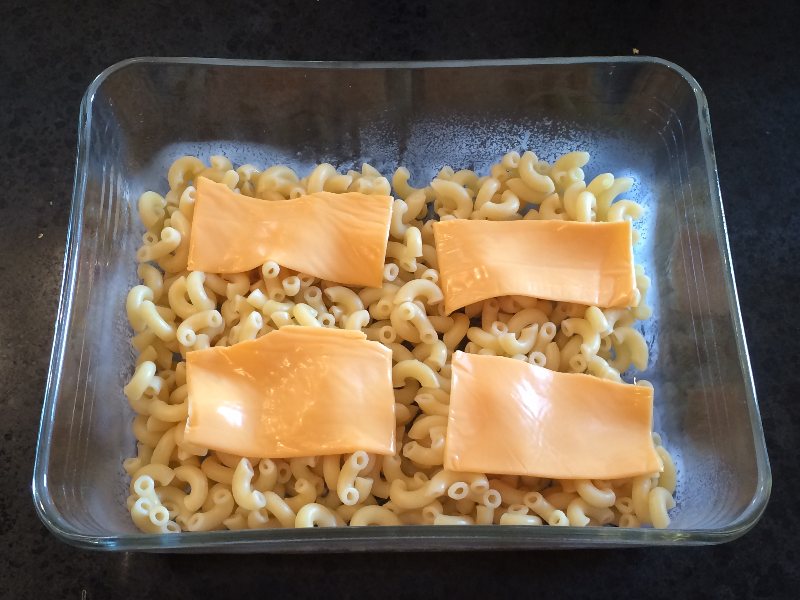

Sometimes all you have is cold macaroni and cheese singles and you're going to make the best of it.
- Macaroni (cold)
- Cheese singles (not enough)
- Desperation
- Look in fridge until desperation is sufficient.
- Remove cold macaroni and cheese singles.
- Unwrap cheese singles and lay them as evenly as you can on top of the macaroni.
- Optional: Microwave it if you have the means, though this won't make it good.
- Bone apple teeth